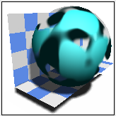
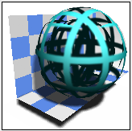
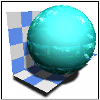
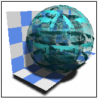
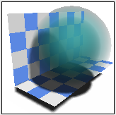

The options on this page let you specify a texture's transparency properties.
|
Option |
Description |
|---|---|
|
Type |
Specifies the type of transparency to apply to the texture. |
|
 Eroded (HQI Only) type |
Operates as a stencil that creates the illusion of erosion on a surface. You can modify the amount of the surface that is eroded, the size of each chunk of erosion, and the fuzziness of the edges. You can modify the following parameters:
|
|
 Wrapped Grid type |
Provides a transparent grid pattern in texture space. The grid appears opaque with the holes being transparent. This can prove useful when you want to see through an outer surface towards interior parts. In addition to the scale parameter, you can modify the following:
|
|
 Wrapped Image type |
Maps the color of a saved image file into transparency, and places that transparency on a surface. Image: Opens the Image File dialog box to let you choose an image file to use. |
|
 Wrapped Stencil type |
Creates complex logos and lettering stencils using TIFF, BMP, Targa, Postscript raster or LWI image files. Image: Opens the Image File dialog box to let you choose an image file to use. NX uses the image to create a stencil in which some parts are completely transparent. You can also use the stencil to serve as a mask in front of colored or complex objects. All black pixels in the mask image result in a transparent surface, and all white pixels are completely visible. Gray values between black and white result in partially transparent surfaces and can be used for anti-aliasing. The masking technique requires two images, a stencil mask image in black and white, and a color image for the output color. |
|
 Glow type |
Creates a glow effect similar to atmospheric scattering around a light source. In addition to the scale parameter, you can modify the following:
|